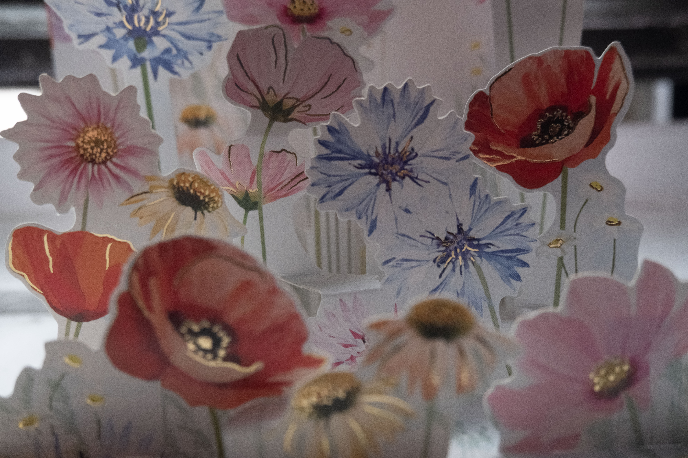
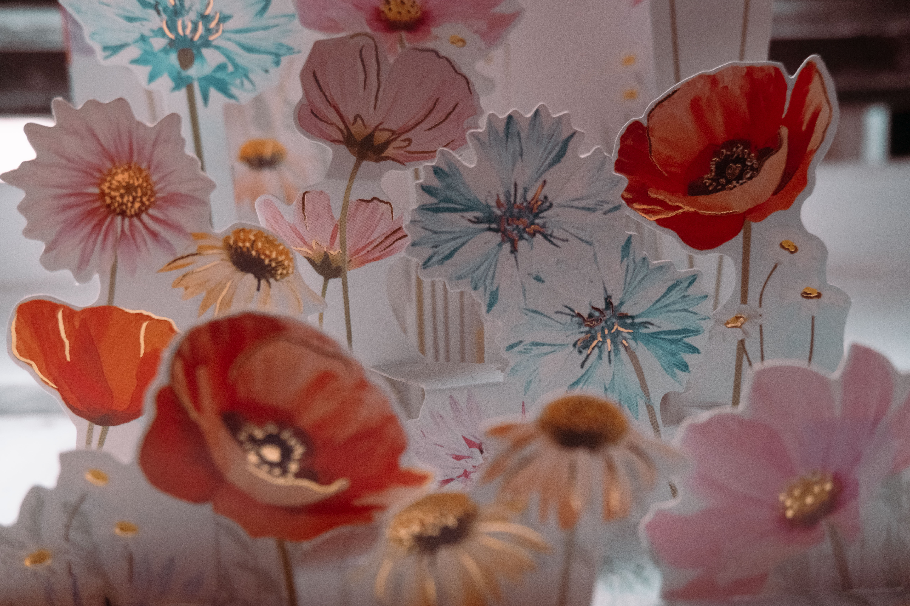
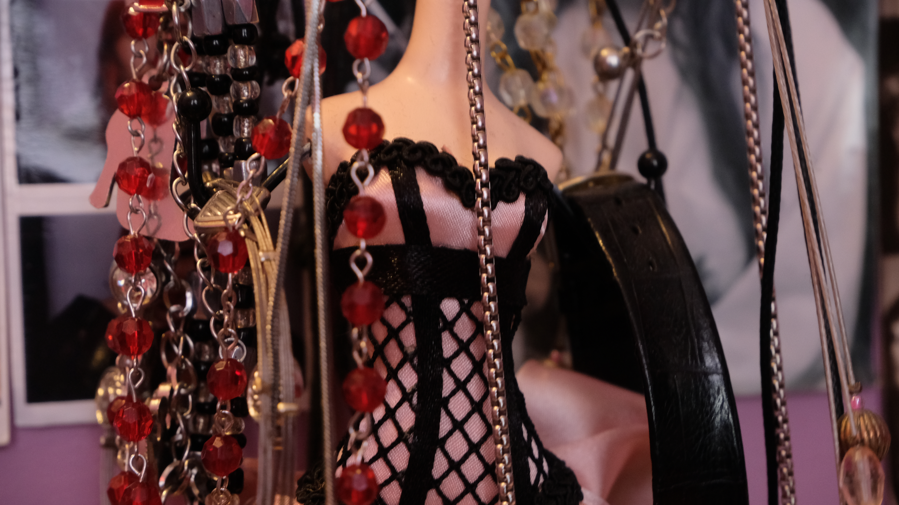
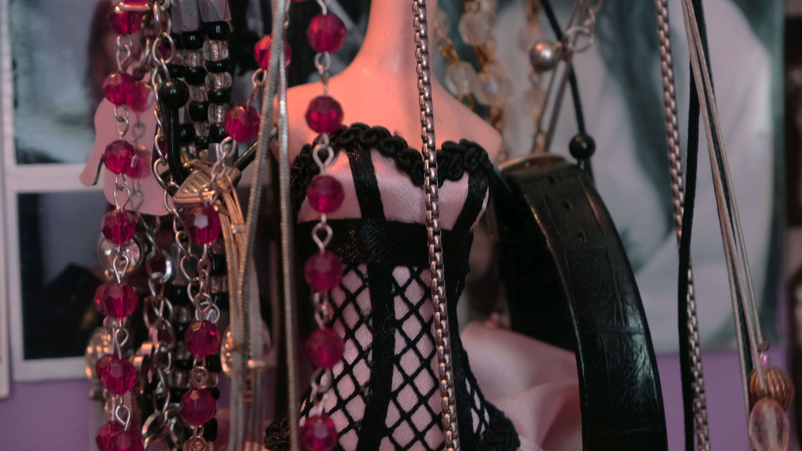

My photographs were edited in photoshop as raw images. You can see how vibrant the colors are on the right image compared to the left. The edited photo on thr right is much more eyecatching with the reds and blues highlighted in the image. I musch prefer the edited image as it gives a feeling of a sort of magical forest with the hints of gold withn the flowers.


These photographs were edited with photoshop through JPEG and I found this to be sort of ristricting, I was not able to have as much freedom on what colors would be adjuste and how much. Through the editing I did end up reducting the yellows and making the contrast high, trying to emphsize the fishnet dress.